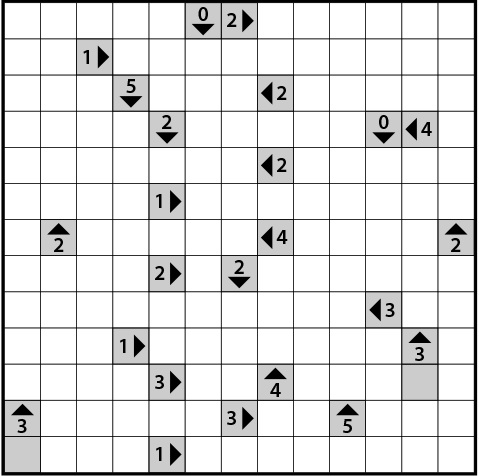
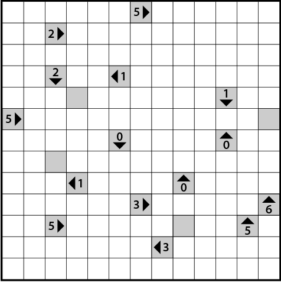

3. Full Lane Yajilin - standard rules, except that horizontal clues refer to blocks anywhere in their row, and vertical clues to blocks anywhere in their column

4. Clued Loop Yajilin - standard rules, except
that clues refer to line segments going in that direction, not blocks (i.e., cell walls crossed in that direction)
